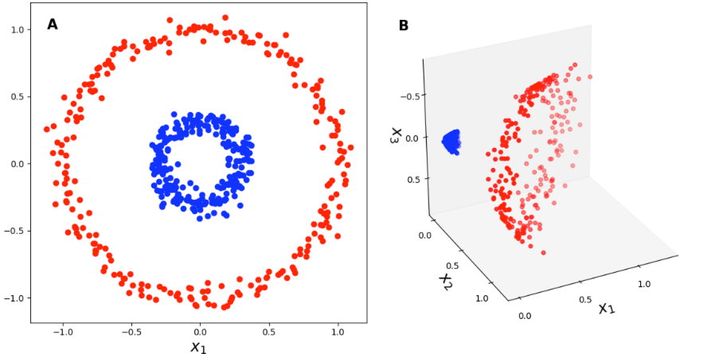
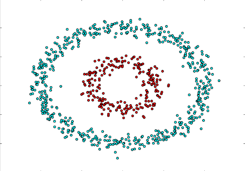
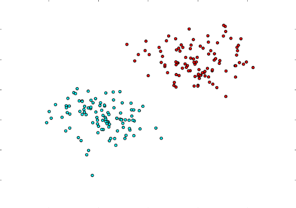
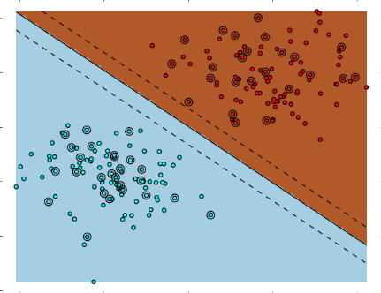
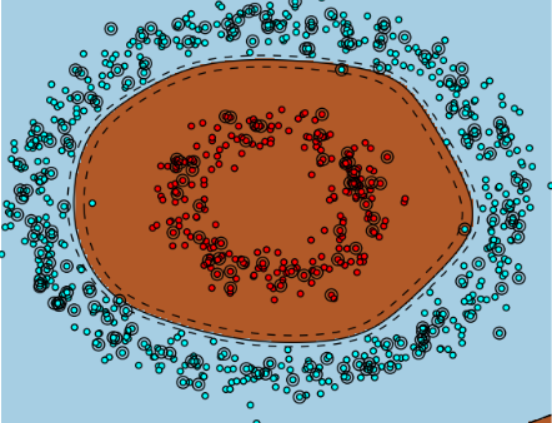

Kernax Kernels
This paper will give an overview of the kernels available in Kernax for SVMS;
Support Vector Machines
SVMs are a supervised machine learning algorithms used for classification and regression tasks. They work by finding the optimal hyperplane that separates data points of different classes with the maximum margin. Kernels that are basically a function of similarity between points are useful in the SVM context because SVMs basically calculate their hyperplanes based on dot products between points(which are what kernels are.)
Kernels main strength : implicit mapping
Kernels real strength lies in its ability to implicitly map our data points into an higher dimensional space and thus, not build the higher dimensional space and make us save computing power. Essentially, when we are in a situation where our data is not linearly separable, Kernels will bestow us a non linear decision boundary that forms an hyperplane when mapped into a higher dimensional space.
Kernel trick idea

This illustration is to show the intuition behind the implicit mapping, kernels allow us to have the same effect as the mapping of all points in a higher dimensional space(which could be an infinitely big one in the case of RBF !) without actually mapping them to that space.
Standard Kernels
Squared Exponential Kernel


Basically, this kernel is the same as RBF, it will just implicitly map the data to an infinite higher dimensional spaces, where the data is linearly separable. \(k_{\mathrm{SE}}(x, x^{\prime}) = \sigma^{2} \exp\left(-\frac{(x - x^{\prime})^{2}}{2\ell^{2}}\right)\) The value of σ determines the shape of the kernel, essentially, a bigger σ means a greater influence of each data point, and a smaller σ means a smaller influence of each data point
The value of l controls the smoothness of the boundary decision, a bigger l means a more complex hyperplane and a smaller l means a more smoother one.
Linear Kernel


This kernel is used to separate linearly separable data directly with an hyperplane. As said in the kernel cookbook, this is equivalent to a bayesian linear regression.
What’s interesting with linear kernels is that they are less prone to overfitting, and are faster than their counterparts. if the data is linearly separable and the dataset is quite big, you want to use a linear kernel. \(k_{\text{lin}}(x, x') = \sigma_a^{2} + \sigma_b^{2}(x - c)(x' - c)\)
\( \sigma \) is the parameter that determines the influence of a single training point.
The offset is the bias paramater that determines the position of the hyperplane in the space
Sigmoid Kernel


This kernel is a special type of kernel that will act like a neuron in a neural network. Basically, where RBF calculate the distance between points, sigmoids calculate the similarity between points using tanh activation function. \(K(x,x') = \tanh(\gamma x^T x' + r)\)
The value of \(\gamma\) determines how sharp the curve is.
The value of r is the bias of the neuron.